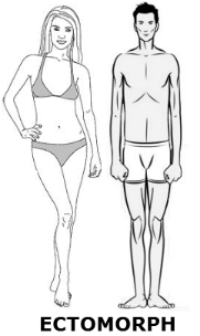
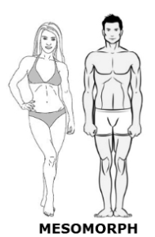
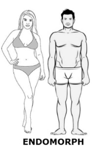

Ektomorfik
Ektomorfik jest z natury szczupły, a
czasami wręcz chudy, przez co
dosyć łatwo odróżnić go od endomorfika i mezomorfika. Ma wąskie barki i biodra, a jego
klatka
piersiowa jest stosunkowo wąska i płaska. Twarz i szyja są smukłe i wydłużone, a postawa
jest
raczej przygarbiona, co wynika ze słabego napięcia mięśni odpowiadających za prostą postawę.
Celem ektomorfika będzie zwiększenie masy ciała, aby budowa ciała była bardziej
proporcjonalna.
Szczególne wyzwanie stanowić będzie zwiększenie muskulatury.
Ektomorfik charakteryzuje się szybką przemianą
materii, co może być
postrzegane, jako atut, ponieważ istnieje niewielkie ryzyko odłożenia nadmiaru kalorii w
postaci
tkanki tłuszczowej. Z drugiej strony wysokie zapotrzebowanie kaloryczne powoduje trudności z
przyrostem masy mięśniowej, ponieważ tkanka mięśniowa bardzo szybko zużywa zapas
energetyczny w
postaci węglowodanów i zaczyna spalać białka, z których jest zbudowana. Z tego powodu
„utrzymanie” mięśni może stanowić problem.

Mezomorfik
Budowa ciała mezomorfika jest wyjątkowo
korzystna. Charakteryzuje się wąskimi biodrami i szerokimi barkami stanowiącymi bardzo dobrą
podstawę do budowania proporcjonalnej, sportowej sylwetki. W dużym uproszczeniu budowa ciała
przypomina prostokąt. Mezomorfik nie może narzekać również na ilość masy mięśniowej,
ponieważ
nie ma większych problemów z jej budowaniem, co przy stosunkowo niewielkim wysiłku czyni go
urodzonym sportowcem o atletycznej budowie. Sylwetka ze względu na odpowiednie napięcie
mięśni
jest wyprostowana. Co więcej poziom testosteronu i hormonu wzrostu u tych osób jest zwykle w
normie, co stwarza idealne warunki do doskonalenia sylwetki.
Metabolizm mezomorfika określany jest, jako
optymalny. Dzięki temu nie ma większego problemu z utrzymaniem tkanki mięśniowej, a
równocześnie
nie ma większego ryzyka, że nadmiar kalorii zostanie odłożony w tkance tłuszczowej.
Zapotrzebowanie kaloryczne ustala się w zgodzie z trybem życia biorąc pod uwagę ilość i
intensywność treningów.. Unormowany metabolizm oznacza również szybką regenerację po
treningu.
Odbudowa mikrouszkodzeń następuje bardzo szybko, dzięki czemu osoba o typie budowy
mezomorficznej może pozwolić sobie na częste i intensywne treningi skutkujące szybkimi i
zadowalającymi rezultatami.

Endomorfik
Budowa ciała endomorfika charakteryzuje się
masywną budową
ciała oraz grubymi kościami. Poprzez spowolniony metabolizm
endomorficy mają skłonności do tycia. Osoby posiadające ten typ budowy posiadają tendencje
do
gromadzenia się tkanki tłuszczowej w okolicach brzucha, co w konsekwencji może przyczynić
się w
przyszłości do takich chorób jak cukrzyca, zespół metaboliczny oraz różnych problemów
sercowych.
Aby zoptymalizować efekty diety edomorfika należy skupić się na prawidłowym doborze
makroskładników.
Dieta powinna zawierać dużą ilość białka,
sięgającą nawet do 50 procent, niską ilość węglowodanów i umiarkowaną ilość zdrowych
tłuszczy.
Osoby o budowie endomorficznej powinni bardziej niż inni uważać na ilość i jakość kalorii w
diecie, ponieważ posiadają duże skłonności do odkładania tkanki tłuszczowej. Picie dużej
ilości
wody i spożywanie częściej mniejszych posiłków może wpłynąć na delikatne przyspieszenie
metabolizmu.